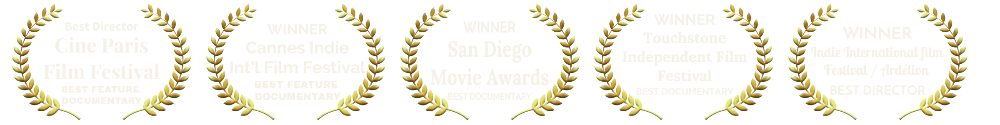
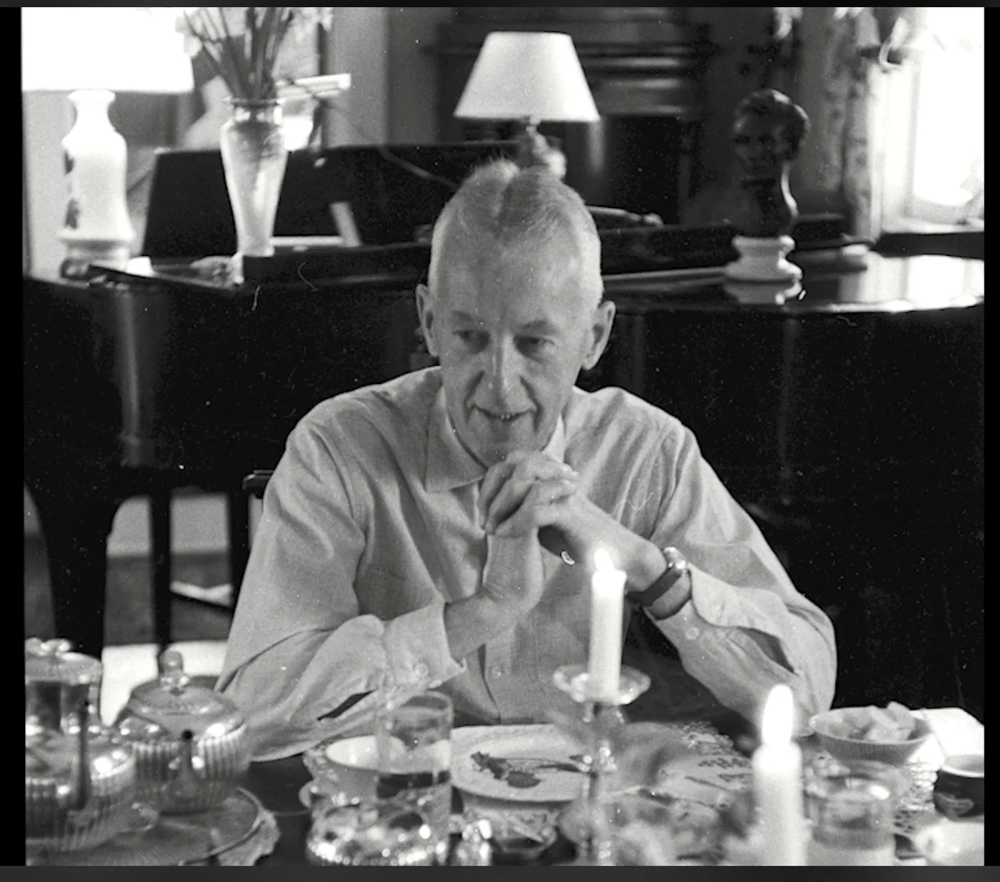
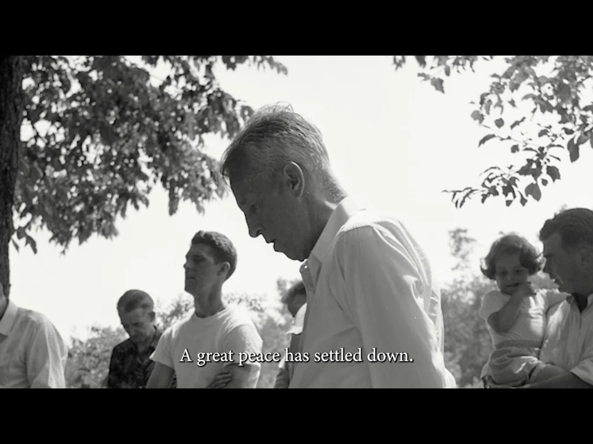
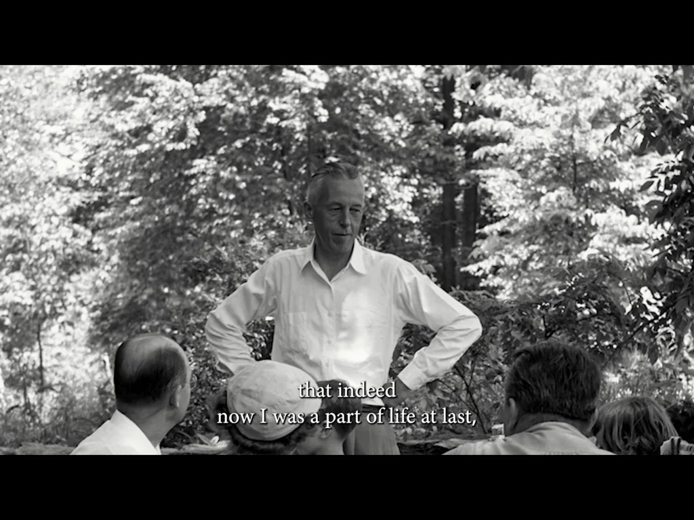
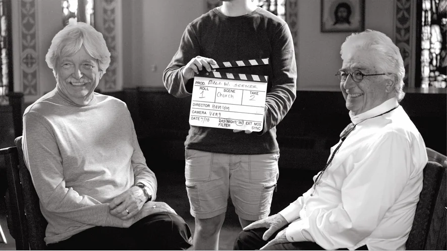
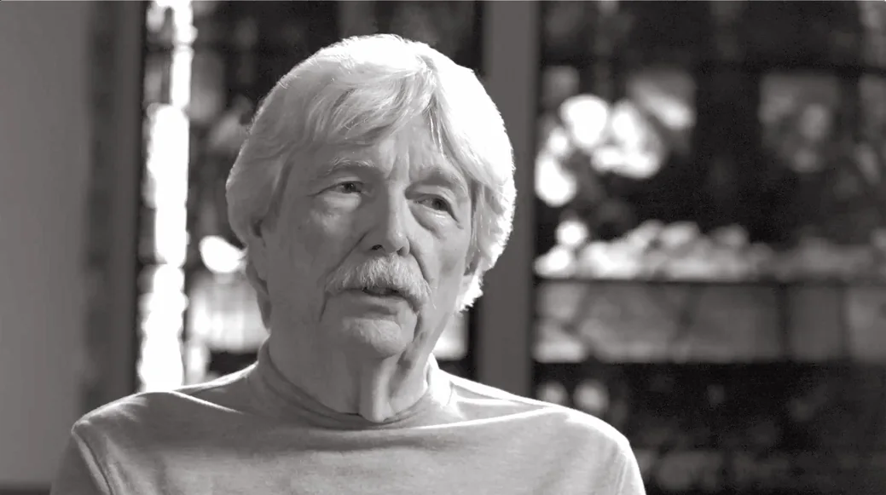
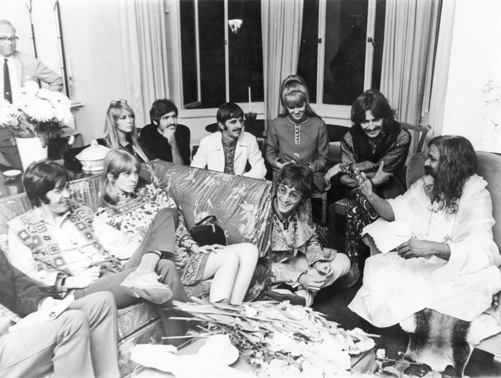
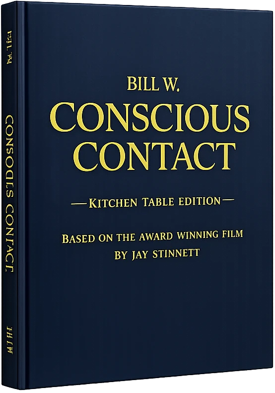

Bill W. Conscious Contact is an award-winning feature documentary exploring the spiritual life of William Griffith Wilson — co-founder of Alcoholics Anonymous and one of the most influential Americans of the twentieth century. Drawing on 25 years of original biographical research by producer Jay Stinnett.
The film features rare archival images from the collection of The Stepping Stones Foundation® — The Historic Home of Bill & Lois Wilson® in Katonah, New York — along with interviews with leading scholars and writers in the field of recovery history. Bill W. Conscious Contact has screened internationally, including in India, Dubai, England, Germany, and Austria. The film has received recognition at film festivals and competitions across the United States and internationally, earning over ten awards.
“Bill Wilson is one of the most fascinating people that lived in the 20th century — on many levels, he’s the most important person. He’s significant to so many millions of people because of what he did in his life — authored Alcoholics Anonymous.”
— William H. Schaberg, Author, Writing the Big Book: The Creation of A.A.






Short Synopsis
Bill W. Conscious Contact is an award-winning documentary exploring the spiritual life of Bill Wilson, co-founder of Alcoholics Anonymous. Drawing on 25 years of biographical research, the film reveals the 10 most remarkable characteristics of Wilson’s personal philosophy — and the profound spiritual traditions that shaped the Twelve Step Movement. Produced in joint venture with The Stepping Stones Foundation® — The Historic Home of Bill & Lois Wilson®.
Long Synopsis
Who was Bill Wilson beyond the founding of Alcoholics Anonymous? Bill W. Conscious Contact sets out to answer that question — and in doing so, illuminates the spiritual foundations of one of the most influential movements of the twentieth century.
Producer and independent scholar Jay Stinnett brings 25 years of original biographical research to this feature documentary, tracing the arc of Wilson’s inner life: his experiences with spiritual awakening, his exploration of consciousness and mystical experience, and the principles he infused into the Twelve Steps — principles that would go on to transform the lives of millions around the world.
Featuring rare archival photography from The Stepping Stones Foundation® — The Historic Home of Bill & Lois Wilson® in Katonah, New York — as well as interviews with leading scholars in recovery history, the film presents a portrait of Wilson as one of the great spiritual thinkers of the American twentieth century.
Bill W. Conscious Contact has screened internationally and is presented in joint venture with The Stepping Stones Foundation®. It is directed by Kevin Hanlon.
Bill W. Conscious Contact has received recognition at film festivals and competitions across the United States and internationally, earning over ten awards:
- Best Director, Documentary — Ardélion European Film Association
- Best Director, Documentary — ARFF Indie International Film Awards
- Best Documentary Feature — Cannes Indie International Film Festival | Experimental, Feature & Short
- Best Director, Documentary Feature — Cine Paris Film Festival
- Best Documentary — Touchstone Independent Film Festival
- Best Docu-Drama Feature — Documentaries Without Borders International Film Festival
- Best Documentary Feature — The Impact DOCS Awards
- Best Documentary — San Diego Movie Awards
- Best Documentary — The Royal Starr Film Festival
- Best Documentary — The Buddha International Film Festival
- Best Feature Film — New York FEEDBACK Film Screenplay Festival
The film has screened internationally in India, Dubai, England, Germany, and Austria, and sold out three self-produced theatrical events in Arizona prior to formal distribution.
Jay Stinnett — Producer & Author
Jay Stinnett is an independent scholar, biographer, documentary producer, and author based in Sedona, Arizona. He operates through Muse Bookings LLC and has devoted 25 years to biographical research into the life and spiritual philosophy of Bill Wilson, co-founder of Alcoholics Anonymous.
His feature documentary Bill W. Conscious Contact — produced in joint venture with The Stepping Stones Foundation® — The Historic Home of Bill & Lois Wilson® in Katonah, New York, and directed by Kevin Hanlon — has earned ten awards at film festivals across the United States and has screened internationally in India, Dubai, England, Germany, and Austria. The film has sold out multiple self-produced theatrical events.
A companion volume — Bill W. Conscious Contact: The Award-Winning Film on Paper — is available through the website billwconsciouscontact.com/book. The 11″×11″ coffee table book is a 146-page pictorial deluxe collector edition. All editions feature rare archival images from The Stepping Stones Foundation® collection, the complete film transcript, and a distillation of the 10 most remarkable characteristics of Bill Wilson’s personal philosophy drawn from Stinnett’s decades of research.
Stinnett is a keynote speaker at international conferences on recovery history and spirituality, including an upcoming engagement in Tokyo, Japan on October 12, 2026.
Kevin Hanlon — Director
Kevin Hanlon is an award-winning documentary filmmaker and the director of Bill W. Conscious Contact. His work on the film earned a Best Director, Documentary award at Cannes Indie International Film Festival, among the project’s ten total awards.


This pictorial history is printed on premium paper with the highest quality photo reproduction available. It contains many of the glorious archival images from The Stepping Stones Foundation® — The Historic Home of Bill & Lois Wilson® collection featured in the film, the complete film transcript, and a distillation of the 10 most remarkable characteristics of Bill Wilson’s personal philosophy drawn from Jay Stinnett’s 25 years of biographical research.
- Retail Price $39.95 Paperback · $79.95 Hardcover · $99.95 Deluxe Collector
- Distribution Amazon, IngramSpark, and on BillWConsciousContact.com
- Publication Launch American Library Association Conference, Chicago · June 23, 2026
Film Producer & Author
Muse Bookings LLC
info@billwconsciouscontact.com
310-874-2341
The Stepping Stones Foundation®
The Historic Home of Bill & Lois Wilson®
Katonah, New York
www.steppingstones.org
www.billwconsciouscontact.com